New resources
My newest resources appear here first. The list updates automatically.
48 resources

Fairy Tale Workshop: Hansel and Gretel Plus Pack

Fairy Tale Workshop: Red Riding Hood Plus Pack

Famous Lives Workshop: Zeus – Fact file to read and fill in (FREE)

Famous Lives Workshop: Picasso – Fact file to read and fill in (FREE)

Famous Lives Workshop: Helen Keller – Fact file to read and fill in (FREE)

Famous Lives Workshop: Rosa Parks – Fact file to read and fill in (FREE)

Famous Lives Workshop: Zeus – Plus pack: texts, quiz and activity

Famous Lives Workshop: Picasso – Plus pack: texts, quiz and activity

Famous Lives Workshop: Helen Keller – Plus pack: texts, quiz and activity

Famous Lives Workshop: Rosa Parks – Plus pack: texts, quiz and activity
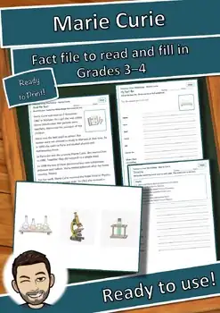
Famous Lives Workshop: Marie Curie – Fact file to read and fill in (FREE)
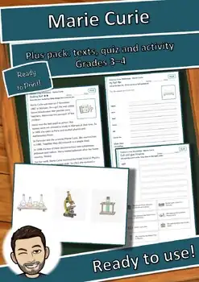
Famous Lives Workshop: Marie Curie – Plus pack: texts, quiz and activity
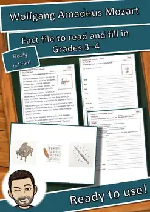
Famous Lives Workshop: Mozart – Fact file to read and fill in (FREE)
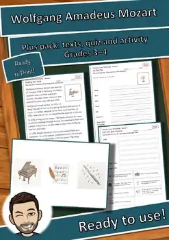
Famous Lives Workshop: Mozart – Plus pack: texts, quiz and activity

Picture Card Workshop: Pets – Memory Game (FREE)

Picture Card Workshop: Pets – Picture & Word Cards (FREE)

Picture Card Workshop: Feelings – Memory Game (FREE)

Picture Card Workshop: Feelings – Picture & Word Cards (FREE)

Picture Card Workshop: Pets – Plus: Clip Cards & Practice

Picture Card Workshop: Feelings – Plus: Clip Cards & Practice
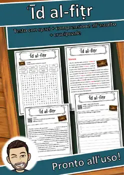
ʿĪd al-fiṭr – Italian Reading Comprehension Worksheet (Scheda didattica)
Salix caprea – Italian Reading Comprehension Worksheet (Scheda didattica)
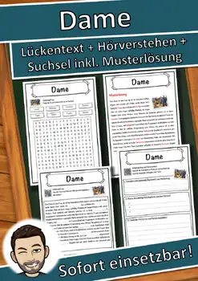
Dame – Arbeitsblatt Lückentext, Hörverstehen & Suchsel | Deutsch / German
Dalton-Brüder – Arbeitsblatt Lückentext & Hörverstehen (Deutsch / German)
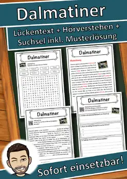
Dalmatiner – Arbeitsblatt Lückentext, Hörverstehen & Suchsel | Deutsch / German
Dalai Lama – Arbeitsblatt Lückentext, Hörverstehen & Suchsel | Deutsch / German
Dackel – Arbeitsblatt Lückentext, Hörverstehen & Suchsel | Deutsch / German
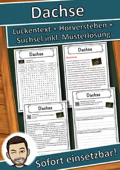
Dachse – Arbeitsblatt Lückentext, Hörverstehen & Suchsel | Deutsch / German
DNA – Arbeitsblatt Lückentext, Hörverstehen & Suchsel | Deutsch / German
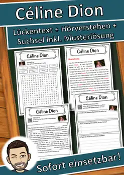
Céline Dion – Arbeitsblatt Lückentext, Hörverstehen & Suchsel | Deutsch / German
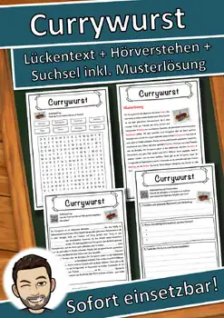
Currywurst – Arbeitsblatt Lückentext, Hörverstehen & Suchsel | Deutsch / German
Cricket – Arbeitsblatt Lückentext, Hörverstehen & Suchsel | Deutsch / German
Cowboy – Arbeitsblatt Lückentext, Hörverstehen & Suchsel | Deutsch / German
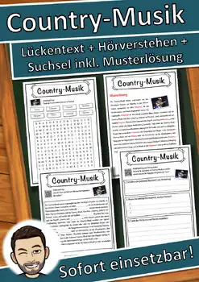
Country-Musik – Arbeitsblatt Lückentext & Hörverstehen (Deutsch / German)
Coronavirus – Arbeitsblatt Lückentext, Hörverstehen & Suchsel | Deutsch / German
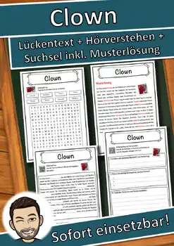
Clown – Arbeitsblatt Lückentext, Hörverstehen & Suchsel | Deutsch / German
Computerspiel – Arbeitsblatt Lückentext & Hörverstehen (Deutsch / German)
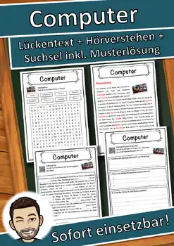
Computer – Arbeitsblatt Lückentext, Hörverstehen & Suchsel | Deutsch / German
Compact Disc – Arbeitsblatt Lückentext & Hörverstehen (Deutsch / German)
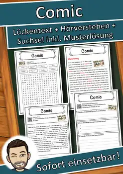
Comic – Arbeitsblatt Lückentext, Hörverstehen & Suchsel | Deutsch / German
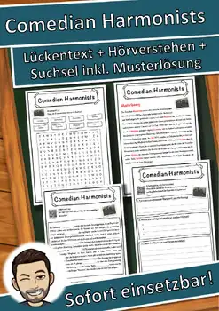
Comedian Harmonists – Arbeitsblatt Lückentext & Hörverstehen (Deutsch / German)
Cola – Arbeitsblatt Lückentext, Hörverstehen & Suchsel | Deutsch / German
Coco Chanel – Arbeitsblatt Lückentext, Hörverstehen & Suchsel | Deutsch / German
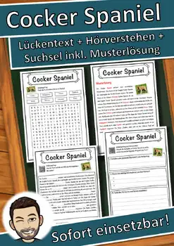
Cocker Spaniel – Arbeitsblatt Lückentext & Hörverstehen (Deutsch / German)
Claude Monet – Arbeitsblatt Lückentext & Hörverstehen (Deutsch / German)
Christoph Kolumbus – Arbeitsblatt Lückentext & Hörverstehen (Deutsch / German)
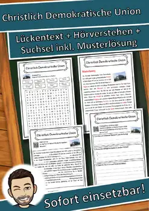
Christlich Demokratische Union – Deutsch / German Arbeitsblatt
Christkind – Arbeitsblatt Lückentext, Hörverstehen & Suchsel | Deutsch / German
No resources found – try a different search term or filter.